where $m$ = slope and $b$ = y-intercept.
For lines $Ax + By + C_1 = 0$ and $Ax + By + C_2 = 0$:
Bisector condition: $d_1 = d_2$.
If $K = \frac{P_1P}{PP_2}$, then:
For $(x_1, y_1)$, $(x_2, y_2)$, $(x_3, y_3)$:
Thus: $m_2 = -\frac{1}{m_1}$ (m2 is the negative reciprocal of m1)
 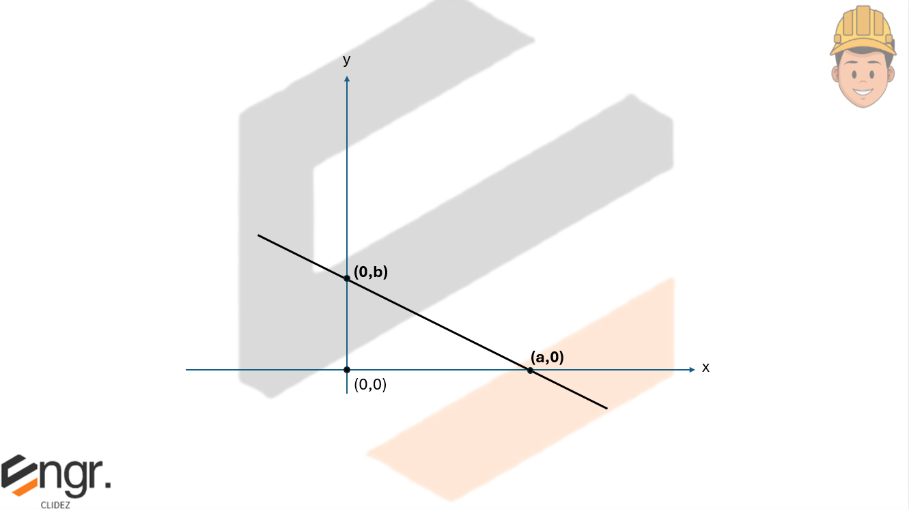
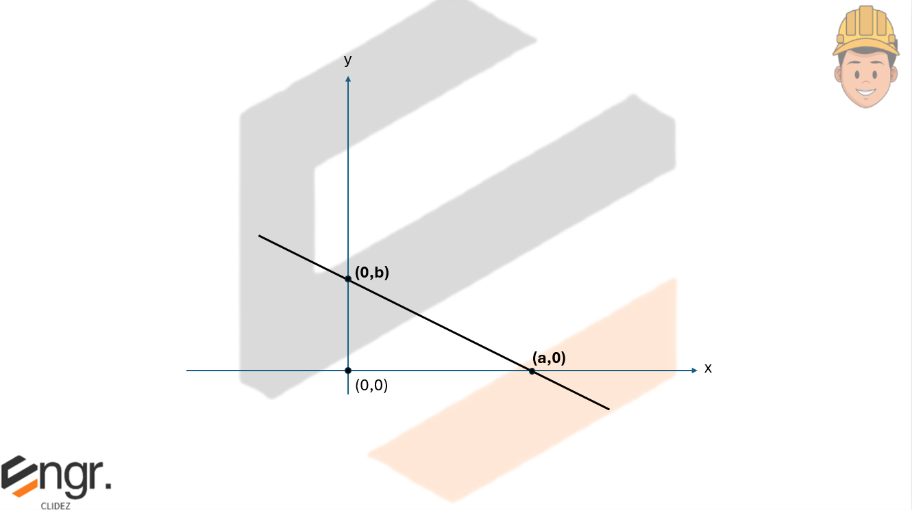
 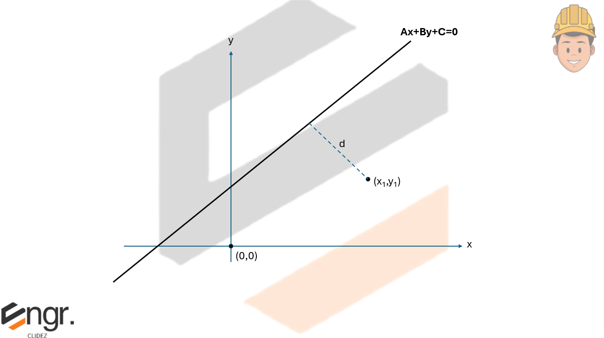
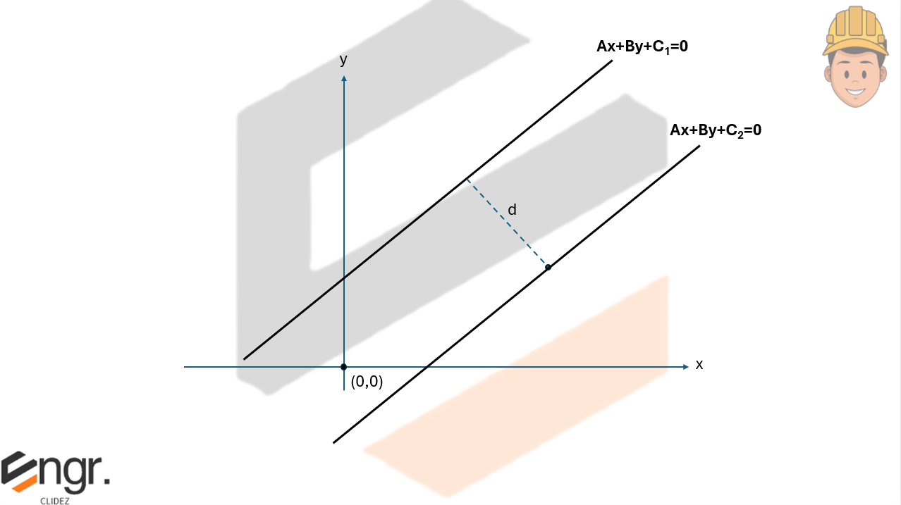
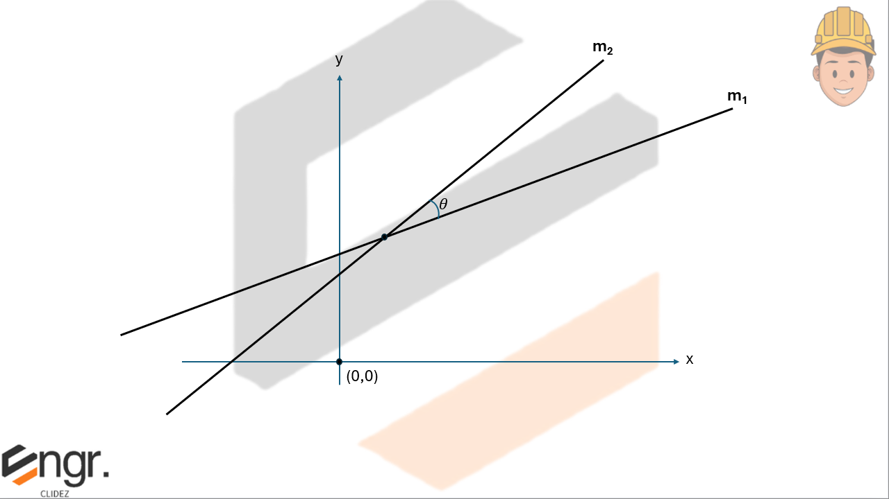
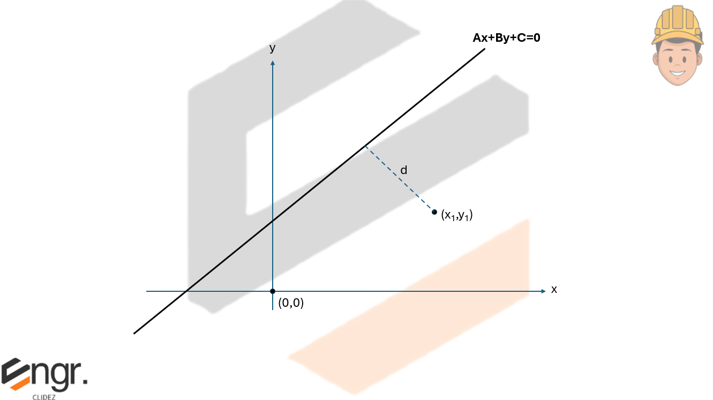
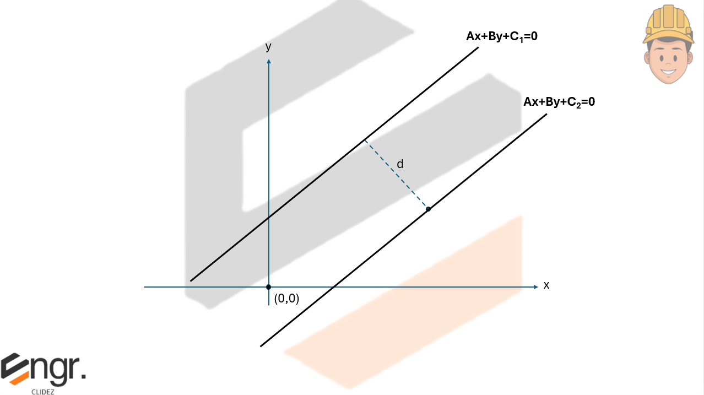
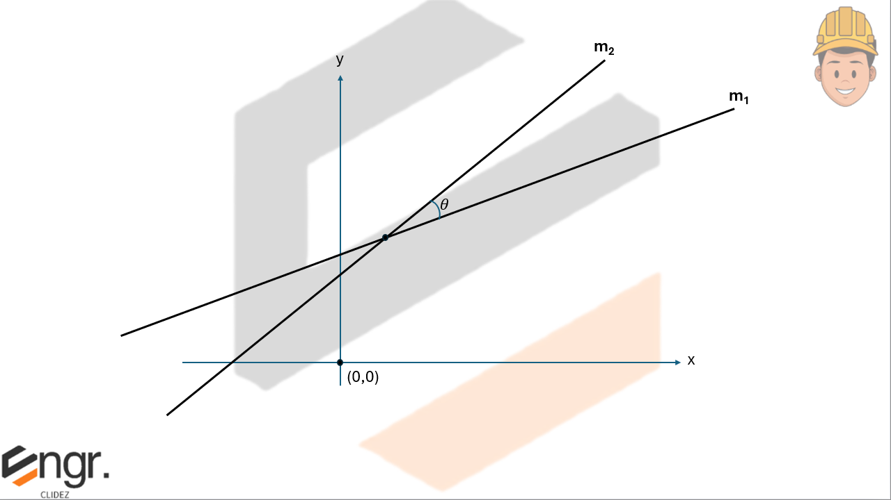
Write the point-slope form and the slope intercept form of the equation of the line with a slope of 4 that passes through the point (-1,3).


See images:
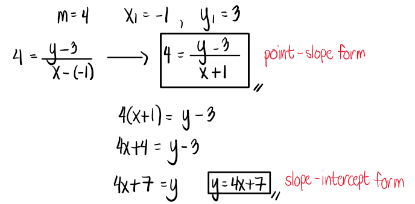


A logistic curve is the graph of an equation of the form where k, b, and c are positive constants. Such curves are useful for describing a population y that grows rapidly initially, but whose growth rate decreases after x reaches a certain value. In a famous study of the growth of protozoa by Gause, a population of Paramecium caudata was found to be described by the logitc equation with c=1.1244, k=105, and x time in days. Find b if the intial position was 3 protozoa.
Hint: $y=\frac{k}{1+be^{-cx}}$


See images:
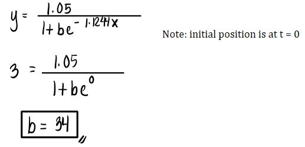


Find the slope-intercept form of the line that passes through (5,-7) that is perpendicular to the line 6x+3y=4. At what point do these lines intersect?


See images:
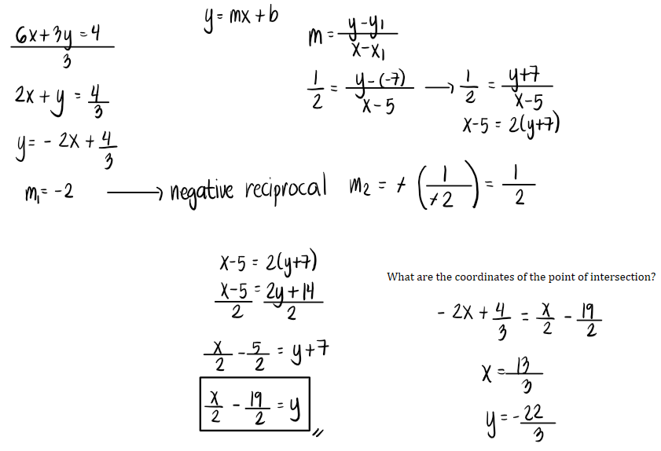 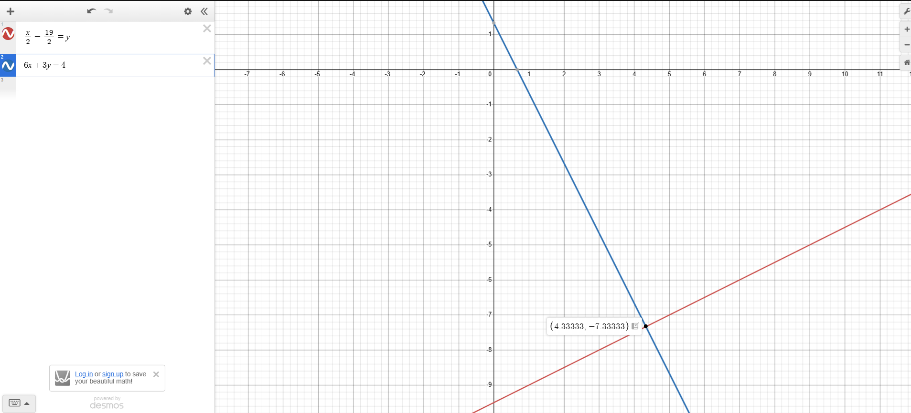

Given A(-3,1) and B(5,4), find the general form of the perpendicular bisector L of the line segment AB.


See images:
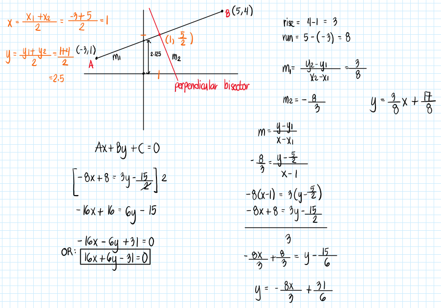


With wireless internet gaining popularity, the number of public wireless internet access points (in thousands) is projected to grow from 2003 to 2008 according to the equation -66x+2y=84, where is is the number of years after 2003. Find the slope and y-intercept of the line equation.


See images:
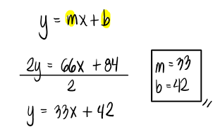


The quantity of a product that consumers purchase depends on its price, with higher prices leading to fewer sales. The table below shows the price of a video and the quantity of that video sold on a weekly basis in a store.
| x (Price of the video) | \$18 | \$25 |
|---|---|---|
| y (No. of videos sold weekly) | 526 | 435 |
Assuming that as price increases, the number sold weekly decreases steadily, use the linear function $y = mx + b$ to find the values of $m$ and $b$, thereby modeling video demand.


See images:
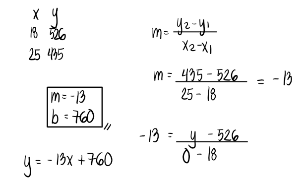


The equations $5x + 2y = 48$ and $3x + 2y = 32$ represent the money collected from school concert ticket sales during the two class periods. If $x$ represents the cost for each adult ticket and $y$ represents the cost for each student ticket, what is the cost for each adult ticket?


See images:
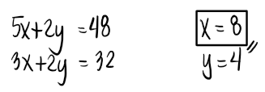


Find the area of a triangle whose vertices are A(-3,1), B(5,3), and (2,-8).


Write the coordinates in two columns, x and y. Follow a clockwise or counterclockwise direction when writing the coordinates. In the last row, copy the coordinates of the first row. Then, multiply from left to right and subtract the result when multiplying from right to left. Add all of the values and divide the result by 2. We use an absolute value sign as area cannot be negative.


What is the angle between the lines y-4x-5=0 and y+2x-1=0?
Note that there are two possible answers because there is an acute and obtuse angle between the two lines.

Find the distance between the lines 2x+3y=1 and 2x+3y=5.
We may also use the concept of moments in statics of rigid bodies. Treat one line as a unit force and take moments about the second line, vertically or horizontally, depending on preference. The vertical or horizontal distance can be obtained by y2-y1 or x2-x1. This moment shall equal the unit force multiplied by the perpendicular distance (which is the distance between the two lines).
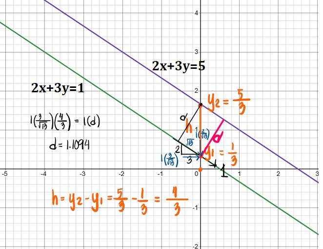
Any conic section can be represented by the general quadratic equation:
The presence of the $Bxy$ term indicates a possible rotation of axes. Circles, ellipses, parabolas, and hyperbolas can all appear rotated when $B \neq 0$.
Ignoring rotation (or after rotating axes so that $B = 0$), the nature of the conic is determined by the signs of $A$ and $C$:
With rotation included ($B \neq 0$), the classification is done using the discriminant:
A circle is the locus of all points that are a fixed distance (radius) from a fixed point (center).
Standard form:
(h,k) is the center of the circle
A parabola is the locus of all points equidistant from a fixed point (focus) and a fixed line (directrix).
Standard forms:
Horizontal axis:
Vertical axis:
(h,k) is the vertex of the parabola
An ellipse is the locus of all points for which the sum of the distances to two fixed points (foci) is constant.
Standard form (horizontal major axis):
where $a^2 = b^2 + c^2$.
The center of the ellipse is at (h,k)
Note: a2 and b2 may interchange depending on the location of the major axis.
A hyperbola is the locus of all points for which the absolute difference of the distances to two fixed points (foci) is constant.
Standard form (horizontal transverse axis):
where $c^2 = a^2 + b^2$.
Standard form (vertical transverse axis):
where $c^2 = a^2 + b^2$.
The center of the hyperbola is at (h,k).
The eccentricity of a conic section describes the shape and “flatness” of the curve. It is defined as:
This value fully determines the nature of the conic:
For the ellipse $$ \frac{(x-h)^2}{a^2} + \frac{(y-k)^2}{b^2} = 1, $$ the first eccentricity is:
The eccentricity describes flatness:
An alternate measure of shape is the second eccentricity:
Using $c^2 = a^2 - b^2$, we may also write:
The directrices of the ellipse lie at the distance:
measured horizontally from the center.
Start with the eccentricity definition:
A point $P$ on the ellipse satisfies:
Evaluating this at the vertex $(a,0)$ gives:
which simplifies to confirm the directrix location:
Thus:
Find the equation of the circle with center at (-3,8) and tangent to the line x-y+5=0.

Determine the length of the tangent to the circle x2+y2-4x-5=0 from (8,-2).
Find the locus of a moving point which forms a triangle of area 21 square units with the point (2, -7) and (-4, 3).
Ans. 5x+3y+32=0 or 5x+3y-10=0